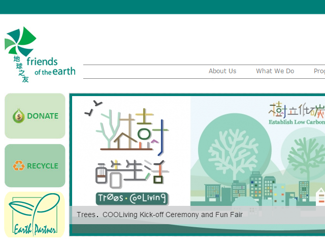

Friends of the Earth (Hong Kong)
Aim & Mission
Friends of the Earth (HK)(FoE(HK)) was established in 1983 as a charitable organization, it is one of Hong Kong's most prominent green groups.
Aim
A healthy and sustainable environment for all.
Mission
FoE(HK), as a leading environmental advocate:
- Focuses on protecting our local and regional environment
- Offers equitable solutions to help create environmentally sustainable public policies, business practices and community lifestyles
- Engages government, business and community to act responsibly
Activities & Services
Recent Activities
- Public
- Green! O Camp
- Power Smart
- Water Challenge
- Green Delight in Estates
- Plant A Tree
- Green Living Campus
- Take A Brake
- Tree Planting Challenge
- Love Food Campaign
- Earth Partner
- Recycle
- Recycling Programme
- School & Community
- Seminar
- Outdoor Workshop & Visit
- Workshops
FoE's Main Services:
Protecting and improving the environment locally and regionally through education, research and campaigns by:
- Lobby the Government
- Engage the public
Job & Volunteering
Current Job Vacancies
- Project Officer (Education)
- IT Support Officer (Short Term - 3 months contract)
- Digital Marketing Officer
Volunteering
FoE(HK) notifies volunteers about the opportunities via email. All helpers must be registered as volunteers of Friends of the Earth (HK). For the registration, please complete the Online Volunteer Registration FormContacts
- Tel: (852) 2528 5588
- Fax: (852) 2529 2777
- Email: foehk@foe.org.hk
- Website: http://www.foe.org.hk/e/
- Address: Unit 1301-1302, 13/F, Block A, Sea View Estate, 2 Watson Road, Hong Kong
- Opening Hours: 9:30a.m.- 6:00p.m. (Monday to Friday)
- Closed on Saturday, Sunday and Public Holidays
Other Information
Membership
- Life Member
- General Member Join now!
Ways to Donate
- One-Off:
- Online Payments by Credit Card or PayPal
- PPS: Pay through PPS machines, the Merchant Code for Friends of the Earth (HK) is 9352.
- Crossed Cheque: Please make Cheques Payable to “Friends of the Earth (HK) Charity Ltd.” and mail to: Unit 1301-1302, 13/F, Block A, Sea View Estate, No.2 Watson Road, Hong Kong
- Bank Deposit: Payment can be made by direct deposit into the bank account of Friends of the Earth (HK) Charity Ltd.
- HSBC Account number: 567-320437-001
- Cash Donation via 7-Eleven: You can make a cash donation (minimum amount of HK$100) to Friends of the Earth (HK) via any 7-Eleven.
- Monthly: Payment Form
- Legacy
Screen-shot: 
back to top